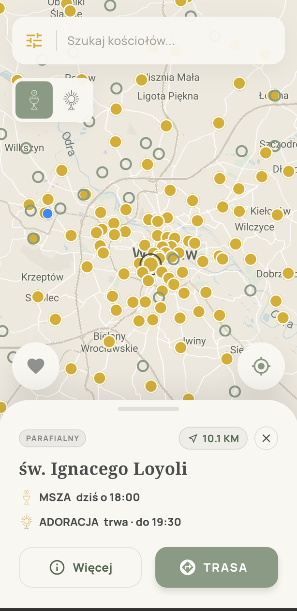
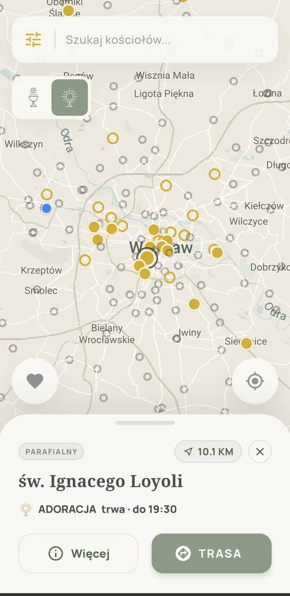
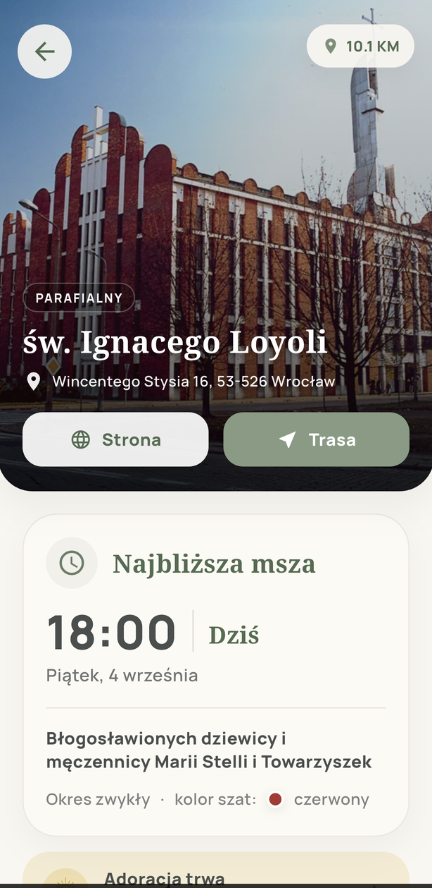
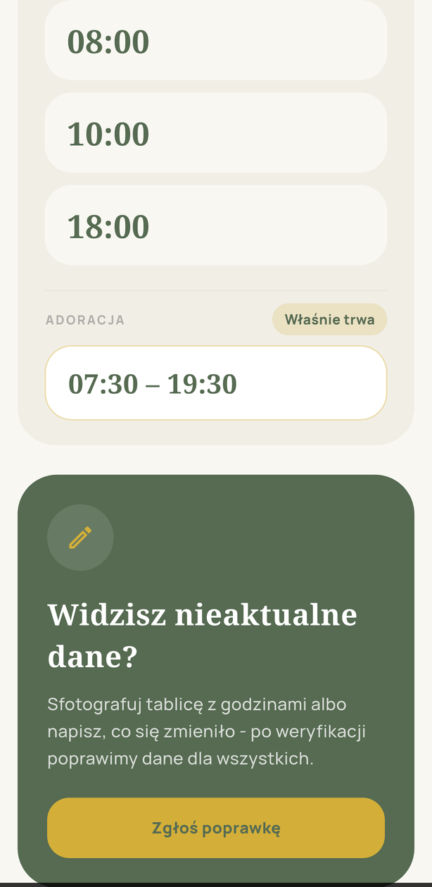
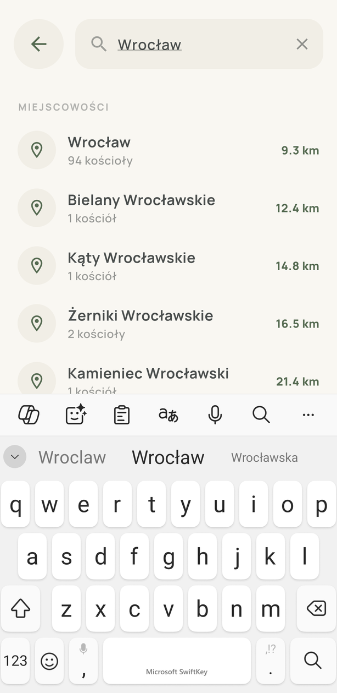
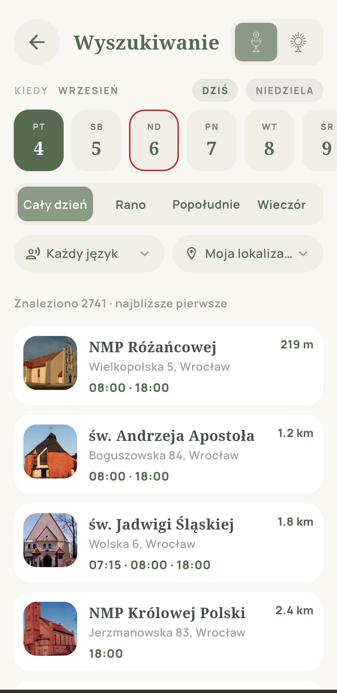
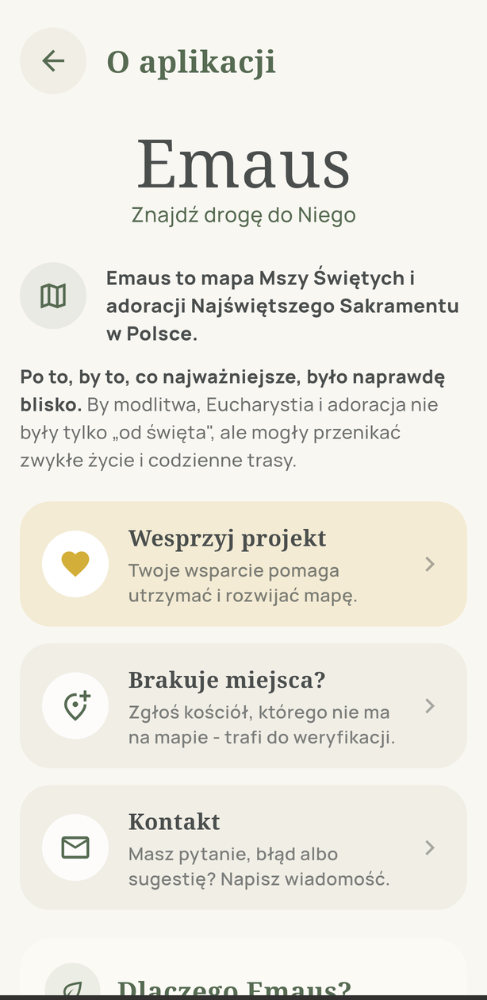

Znajdź drogę do Niego
Mapa Mszy Świętych i adoracji Najświętszego Sakramentu w Polsce. Otwierasz mapę i od razu widzisz, gdzie jest najbliższa Msza dziś, gdzie trwa adoracja i jak tam dojechać. Działa bez internetu.

Każdy kościół w kadrze pokazuje najbliższą Mszę: dziś, jutro albo w najbliższą niedzielę. Z uwzględnieniem świąt nakazanych i Mszy wigilijnych.
Osobny tryb mapy: gdzie adoracja właśnie trwa, gdzie zacznie się dziś, a gdzie jest wieczysta. Do tego godziny na każdy dzień.
Cała baza jest na telefonie. Wyszukiwanie, mapa i godziny działają bez zasięgu, a aktualizacje dociągają się w tle.
Po nazwie kościoła, wezwaniu albo miejscowości. Wyszukiwanie zaawansowane: dzień, pora, język Mszy, lista posortowana po odległości.
Harmonogram na dowolny dzień w przód: kolor szat, ranga dnia, święta nakazane i zmiany godzin w Triduum czy Wigilię.
Widzisz nieaktualne godziny? Sfotografuj tablicę albo napisz, co się zmieniło. Po weryfikacji poprawimy dane dla wszystkich.
Kolor niesie znaczenie czasowe, rozmiar rangę, a poświata mówi o pewności położenia. Bez czytania etykiet wiesz, gdzie warto iść teraz.






Godziny pochodzą z oficjalnych serwisów diecezjalnych i parafialnych, są porządkowane i weryfikowane ręcznie, a potem stale poprawiane dzięki zgłoszeniom od wiernych. Baza rośnie diecezja po diecezji.
Napisz do nas albo zgłoś miejsce bezpośrednio w aplikacji. Każde zgłoszenie trafia do ręcznej weryfikacji.